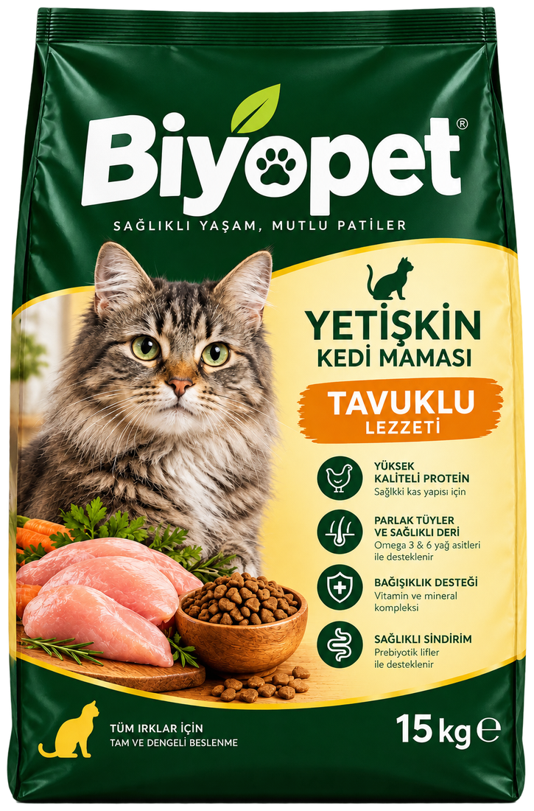
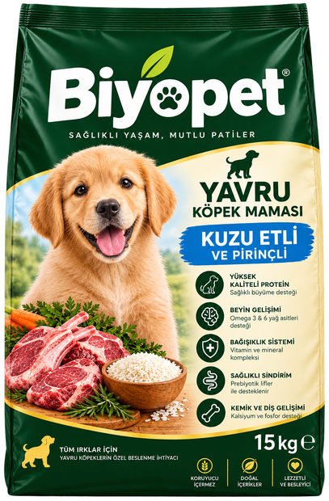
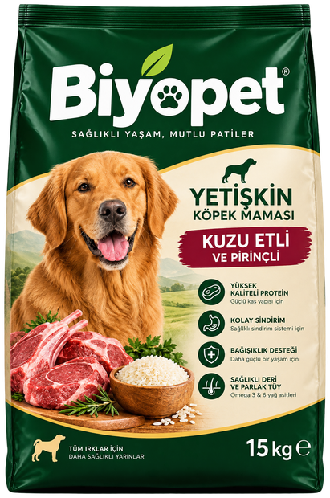

Doğallık
Özenle seçilmiş hammaddeler ve dengeli formüllerle, mümkün olduğunca doğala yakın bir beslenme sunmayı hedefliyoruz.
15 kg ekonomik paketlerde tüm Türkiye'ye kargo
Biyopet, evcil dostlarımızın doğal beslenme ihtiyacından doğdu. Amacımız basit: kedi ve köpeklerin yaşına uygun, güvenilir ve lezzetli mamalar üretmek.
Nereden başladık?
Biyopet; "iyi mama, iyi yaşam" fikrinden yola çıkarak kuruldu. Evcil dostlarımızın günlük beslenmesinde en çok ihtiyaç duyduğu şeyin dengeli bir formül olduğuna inanıyoruz. Bu yüzden her ürünümüzü yaş dönemini, türe özgü ihtiyaçları ve sindirim hassasiyetlerini göz önünde bulundurarak hazırlıyoruz.
Kedi ve köpek mamalarımızda kullandığımız protein kaynaklarını, tahılları ve yağ asitlerini titizlikle seçiyor; hiçbir formülde anlaşılması zor içeriklerle karşılaşmanızı istemiyoruz. Amacımız, paketin arkasındaki içerik listesini okuduğunuzda içinizin rahat etmesi.

“İyi mama, görünmeyen yerlerde başlar: doğru hammadde, doğru oran ve doğru hijyen.”
Değerlerimiz
Özenle seçilmiş hammaddeler ve dengeli formüllerle, mümkün olduğunca doğala yakın bir beslenme sunmayı hedefliyoruz.
İçerikleri sade dille anlatıyor, paket üzerinde ne varsa sitede de aynısını paylaşıyoruz. Besleme miktarları ve geçiş süreci konusunda yol gösteriyoruz.
Sağlıklı bir yaşamın dengeli beslenmeden geçtiğine inanıyor; ürünlerimizi hayvan refahını merkeze alarak geliştiriyoruz.


Kalite yaklaşımımız
Mamalarımızın güvenilirliği, üretimin her adımında uyguladığımız kontrol noktalarına dayanır. Hammadde kabulünden başlayıp paketlemeyle tamamlanan süreçte, tanımlı her aşamanın kendi kontrol kriteri vardır.
Gelen her parti; nem, görünüm ve duyusal özellikler açısından değerlendirilir, onaylanmadan üretime alınmaz.
Protein, yağ, vitamin ve mineral oranları yaş grubuna göre dengelenir; üretim reçetesi her partide doğrulanır.
Kapalı üretim hattı ve düzenli sanitasyon programı; her parti için geriye dönük izlenebilirlik kaydı.
Işık ve nem geçirmeyen ambalaj, ürünün son kullanma tarihine kadar tazeliğini korumasına yardımcı olur.
Üretim yolculuğu
Et, tahıl ve sebzeler izlenebilirlik kriterlerine göre tedarik edilir.
Yaş ve türe özel oranlar belirlenir, besin değerleri dengelenir.
Kapalı hat, kontrollü ısıl işlem ve hijyen programı uygulanır.
15 kg'lık paketler tazeliği koruyacak şekilde kapatılır ve sevk edilir.
Birlikte çalışalım
Ürün ailemizi yakından tanıyın; toptan, bayilik ve iş birliği talepleriniz için bize yazın.